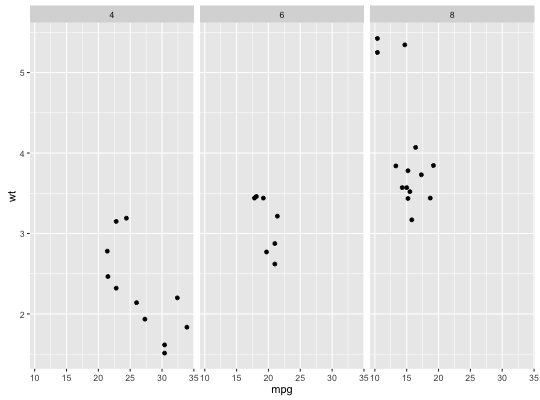

benchplot(x)
Benchmark plot creation time. Broken down into construct, build, render and draw times.
benchplot(ggplot(mtcars, aes(mpg, wt)) + geom_point())step user.self sys.self elapsed 1 construct 0.002 0.001 0.003 2 build 0.016 0.000 0.016 3 render 0.035 0.000 0.034 4 draw 0.098 0.006 0.112 5 TOTAL 0.151 0.007 0.165benchplot(ggplot(mtcars, aes(mpg, wt)) + geom_point() + facet_grid(. ~ cyl))
step user.self sys.self elapsed 1 construct 0.310 0.025 0.341 2 build 0.043 0.000 0.044 3 render 0.112 0.004 0.119 4 draw 0.168 0.011 0.192 5 TOTAL 0.633 0.040 0.696